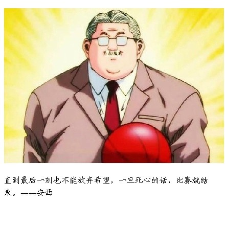
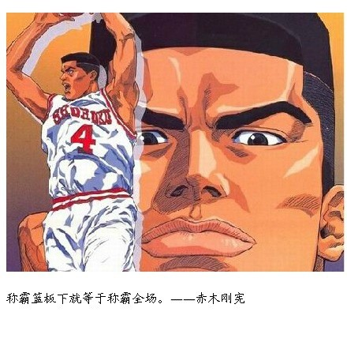
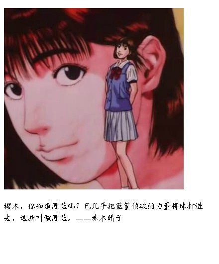
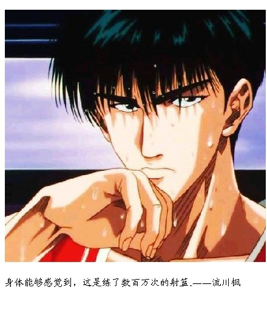
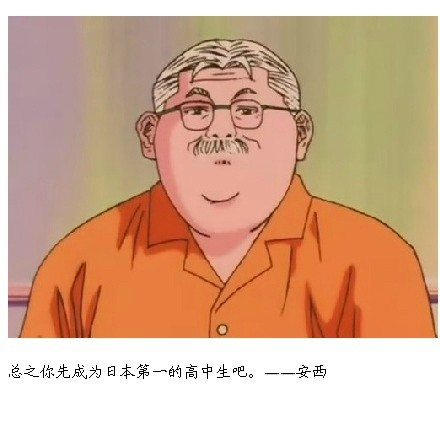
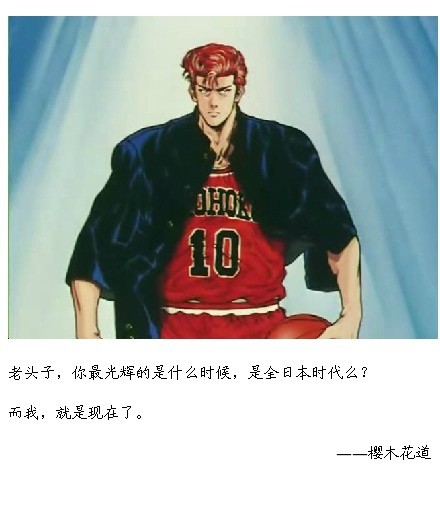
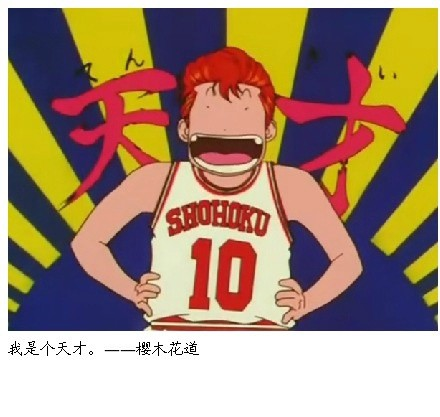
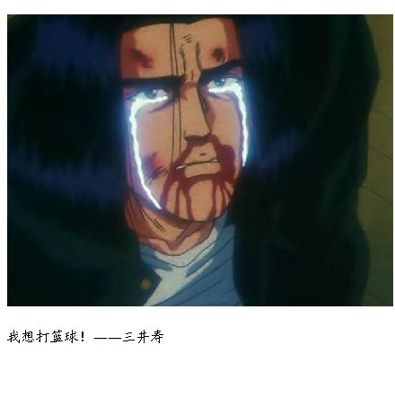
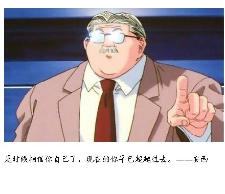

>>青春不过期
首页
在回忆里，我们想起那个可爱的有着肉嘟嘟下巴的安西教练，我们想起大猩猩赤木在篮下的不可阻挡，我们想起晴子：“樱木，你会打篮球吗？”我们想起流川枫，散发着精英的气息，我们想起天才樱木花道，为了全队的失利剃落的红发，我们想起三井：“教练，我想打篮球”，我们想起宫城，战胜了自己，为了神奈川第一后卫，我们想起彩子厉害的书法“称霸全国”...这些都是回忆，但，青春不过期，这些人，这些话... 不过期...









版权所有：天津外国语大学| 国际传媒学院 魏塬梅 制作(1205414012)
盗版必究 微博@Aillow